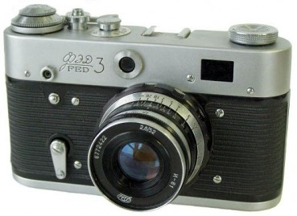
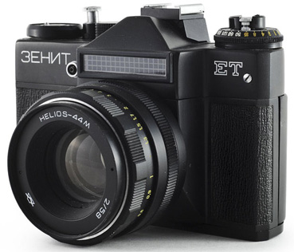
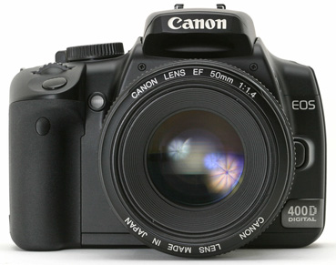

About
I have become interested in photography in my childhood. My father has played a big role in this because he was an amateur photographer. He had a lot of different photo accessories starting with the camera and ending with printing equipment. I couldn't wait to start exploring his photo camera and the equipment. In age of 13 I got access to all of his 'photo treasures'. My first photo camera was FED3.
After practicing for a while, in age of 15-16, I seriously was considering photography as something I would like to be engaged with. I wasn't even scared by the old fashion way of printing photos when you have to deal with all the chemicals in order to capture images from the film on paper.
 Soon my father's photo camera became mine. After using it for three years, I started to think about some upgrade (to buy a new camera, something more modern). In 18 I was able to get a new camera called Zenit ET. It was a great replacement for some years; suddenly entire world switched to digital, so...right, I needed a new camera.
 In the beginning, when the digital cameras just came out, they were pricey, so I couldn't afford buying one. What I did was - I waited until the excitement subsided on them and bought one at a reasonable price. It was February 2008. Since than I enjoy all the delights of digital photography. Whenever I go outdoors, I always take my digital camera with me.